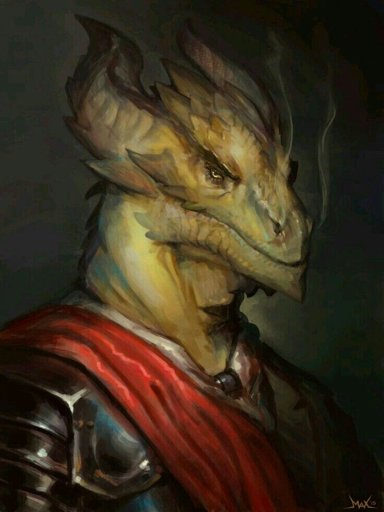

Khirol

Nome: Khirol
Classes:
Nível Total : 5
Origem: Draconato
Percepção passiva:
Salvaguardas:
PO:
Linguagens:
->HISTORIA<-
Nascido em demacia, de origens desconhecidas, viveu na floresta por muito tempo. apos sair da floresta sofreu por racismo de uma vila de humanos proxima onde todos os chamavam de feio. apos isso ele viveu exclusivo dos outros e nunca mais teve facilidade de se aproximar de novas pessoas. cansando-se da floresta, decidiu se mudar para shurima, local onde esta por quase 200 anos. cansando-se de sua vida monotona em uma caverna do deserto, decide ir fazer uma nova visita para uma aldeia e ver como esta a sociedade apos 200 anos como viveu recluso grande parte de sua vida, tem dificuldade de se comunicar com os outros, dificuldade que mesmo tendo se diminuido apos conhecer um amigo meio dragao continua grande como objetivo de vida decide deseja se tornar poderoso o suficiente para que preconceito nunca mais exista
->FEITOS<-
Ainda não há feitos.